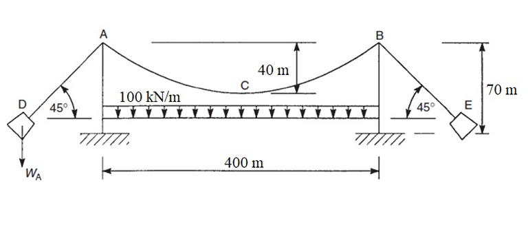

Énoncé du Problème
Un câble de suspension d'un pont suspendu (Figure II.6) supporte une charge uniformément répartie sur l'horizontale de $q = 120\text{ kN/m}$ sur une portée $L = 300\text{ m}$ avec une flèche $f = 30\text{ m}$. Les mâts ont une hauteur $h = 50\text{ m}$. Le câble d'ancrage fait un angle de $45^\circ$ avec l'horizontale.
- Tension maximale et dimensionnement : Calculer la tension maximale $T_{\max}$ dans le câble de suspension, l'inclinaison ($\alpha$) aux appuis A et B, ainsi que le diamètre minimal $d_{\min}$ du câble sachant que la contrainte admissible du matériau est $\sigma_{\text{adm}} = 1000\text{ N/mm}^2$.
- Cas 1 (Poulie sans frottement) : Si le câble passe par une poulie au sommet des mâts, calculer le moment de renversement à la base du mât ($M_{\text{mât}}$), l'effort axial vertical dans le mât ($N_{\text{mât}}$), et le poids minimal du massif d'ancrage ($w_{\text{anc}}$).
- Cas 2 (Chariot sur rouleaux) : Si le câble repose sur un chariot glissant (saddle), calculer la tension dans le câble d'ancrage ($T_{AD}$), le moment fléchissant à la base du mât, l'effort vertical ($N_{\text{mât}}$), et le poids requis pour le massif d'ancrage ($w_{\text{anc}}$).
Figure de l'exercice
Voici figure du problème de pont suspendu :

Démonstrations & Résolution Étape par Étape
1. Démonstration de $y(x) = \frac{4f}{L^2} x (L - x)$
Repère : Origine $(0,0)$ à l'appui gauche $A$, axe $x$ horizontal vers la droite ($0 \le x \le L$), axe $y$ vertical orienté vers le bas.
1.1 Réactions aux appuis : Par symétrie verticale globale : $$V_A = V_B = \frac{q L}{2}$$
1.2 Effort tranchant fictif / Force verticale interne : Sur une section située à une distance $x$ : $$V(x) = V_A - q x = \frac{q L}{2} - q x = q \left(\frac{L}{2} - x\right)$$
1.3 Équation différentielle de la forme du câble : La pente $\frac{dy}{dx}$ en tout point est égale au rapport entre la force verticale interne $V(x)$ et la poussée horizontale constante $H$ : $$\frac{dy}{dx} = \frac{V(x)}{H} = \frac{q}{H} \left(\frac{L}{2} - x\right)$$
1.4 Intégration : $$y(x) = \int \frac{q}{H} \left(\frac{L}{2} - x\right) dx = \frac{q}{H} \left(\frac{L x}{2} - \frac{x^2}{2}\right) + C = \frac{q}{2H} x (L - x) + C$$ À l'appui $A(0,0)$, $y(0) = 0 \implies C = 0$. Donc : $$y(x) = \frac{q}{2H} x (L - x)$$
1.5 Condition de flèche maximale : Au milieu de la portée ($x = \frac{L}{2}$), la flèche vaut $y = f$ : $$f = \frac{q}{2H} \left(\frac{L}{2}\right) \left(L - \frac{L}{2}\right) = \frac{q L^2}{8 H} \implies \frac{q}{2H} = \frac{4f}{L^2}$$ En réinjectant $\frac{q}{2H}$ dans l'équation de $y(x)$, on obtient : $$\mathbf{y(x) = \frac{4f}{L^2} x (L - x)}$$
2. Démonstration de $y = \frac{q_l}{2H} x^2$
Repère : Origine $(0,0)$ au point le plus bas du câble $C$ (sommet parabole), axe $x$ horizontal, axe $y$ vertical vers le haut.
Équilibre d'un tronçon $CP$ de longueur $x$ :
• En $C(0,0)$, la tangente est horizontale : la force verticale y est nulle, la tension se réduit à la poussée $H$.
• Charge verticale résultante : $W = q_l \cdot x$, appliquée à mi-distance $\frac{x}{2}$ du point $P(x,y)$.
• Équilibre des moments au point $P$ :
$$\sum M_P = 0 \implies H \cdot y - W \cdot \left(\frac{x}{2}\right) = 0$$
$$\implies H \cdot y - (q_l \cdot x) \cdot \frac{x}{2} = 0 \implies \mathbf{y = \frac{q_l}{2H} x^2}$$
3. Calculs Numériques Détaillés
Données du problème : $q = 120\text{ kN/m}$, $L = 300\text{ m}$, $f = 30\text{ m}$, $h = 50\text{ m}$, $\sigma_{\text{adm}} = 1000\text{ N/mm}^2 = 1000\times 10^3\text{ kN/m}^2$.
3.1 Poussée horizontale $H$ et réaction $V_A$ : $$H = \frac{q L^2}{8 f} = \frac{120 \times 300^2}{8 \times 30} = \frac{10\,800\,000}{240} = \mathbf{45\,000\text{ kN} = 45\text{ MN}}$$ $$V_A = \frac{q L}{2} = \frac{120 \times 300}{2} = \mathbf{18\,000\text{ kN} = 18\text{ MN}}$$
3.2 Inclinaison $\alpha$ et Tension Maximale $T_{\max}$ : $$\tan(\alpha) = \frac{V_A}{H} = \frac{18\,000}{45\,000} = 0{,}40 \implies \mathbf{\alpha = \arctan(0{,}40) \approx 21{,}80^\circ}$$ $$T_{\max} = \sqrt{H^2 + V_A^2} = \sqrt{45\,000^2 + 18\,000^2} = \sqrt{2\,349\,000\,000} \approx \mathbf{48\,466{,}48\text{ kN} \approx 48{,}47\text{ MN}}$$
3.3 Section minimale et Diamètre $d_{\min}$ : $$A_{\min} = \frac{T_{\max}}{\sigma_{\text{adm}}} = \frac{48\,466{,}48 \times 10^3\text{ N}}{1000\text{ N/mm}^2} = 48\,466{,}48\text{ mm}^2$$ $$d_{\min} = \sqrt{\frac{4 \cdot A_{\min}}{\pi}} = \sqrt{\frac{4 \times 48\,466{,}48}{3{,}14159}} \approx \mathbf{248{,}41\text{ mm} \approx 24{,}84\text{ cm}}$$
3.4 Analyse du Mât - Cas 1 (Poulie sans frottement) :
Tension continue : $T_{AD} = T_{\max} = 48\,466{,}48\text{ kN}$.
Composantes d'ancrage ($\theta = 45^\circ$) :
$$H_{\text{anc}} = V_{\text{anc}} = T_{AD} \cos(45^\circ) = 48\,466{,}48 \times 0{,}7071 = 34\,270{,}98\text{ kN}$$
Déséquilibre horizontal au sommet du mât :
$$\Delta H = H - H_{\text{anc}} = 45\,000 - 34\,270{,}98 = 10\,729{,}02\text{ kN}$$
Moment fléchissant à la base du mât ($h = 50\text{ m}$) :
$$M_{\text{mât}} = \Delta H \cdot h = 10\,729{,}02 \times 50 = \mathbf{536\,451\text{ kN}\cdot\text{m} = 536{,}45\text{ MN}\cdot\text{m}}$$
Effort vertical axial dans le mât :
$$N_{\text{mât}} = V_A + V_{\text{anc}} = 18\,000 + 34\,270{,}98 = \mathbf{52\,270{,}98\text{ kN} = 52{,}27\text{ MN}}$$
Poids nécessaire du massif d'ancrage :
$$w_{\text{anc}} \ge V_{\text{anc}} = \mathbf{34\,270{,}98\text{ kN} \approx 34{,}27\text{ MN}}$$
3.5 Analyse du Mât - Cas 2 (Chariot sur rouleaux) :
Équilibre horizontal sur le chariot glissant : $H_{\text{anc}} = H = 45\,000\text{ kN}$.
Tension dans le câble d'ancrage :
$$T_{AD} = \frac{H_{\text{anc}}}{\cos(45^\circ)} = \frac{45\,000}{0{,}7071} = \mathbf{63\,639{,}61\text{ kN} = 63{,}64\text{ MN}}$$
Effort vertical d'ancrage : $V_{\text{anc}} = T_{AD} \sin(45^\circ) = 45\,000\text{ kN}$.
Moment fléchissant : $\Delta H = 0 \implies \mathbf{M_{\text{mât}} = 0\text{ MN}\cdot\text{m}}$ (Le mât travaille en compression pure).
Effort vertical axial dans le mât :
$$N_{\text{mât}} = V_A + V_{\text{anc}} = 18\,000 + 45\,000 = \mathbf{63\,000\text{ kN} = 63{,}00\text{ MN}}$$
Poids nécessaire du massif d'ancrage :
$$w_{\text{anc}} \ge V_{\text{anc}} = \mathbf{45\,000\text{ kN} = 45{,}00\text{ MN}}$$
Paramètres Interactifs de la Structure
| Grandeur Physico-Mécanique | Valeur Calculée |
|---|---|
| Poussée Horizontale $H$ | - |
| Réaction Verticale Appui $V_A$ | - |
| Angle d'inclinaison $\alpha$ | - |
| Tension Maximale $T_{\max}$ | - |
| Diamètre Minimal Câble $d_{\min}$ | - |
| Tension Câble d'Ancrage $T_{AD}$ | - |
| Moment de Flexion Mât $M_{\text{mât}}$ | - |
| Effort Vertical Mât $N_{\text{mât}}$ | - |
| Poids Massif Ancrage $w_{\text{anc}}$ | - |